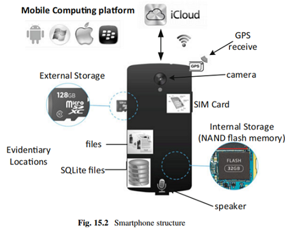
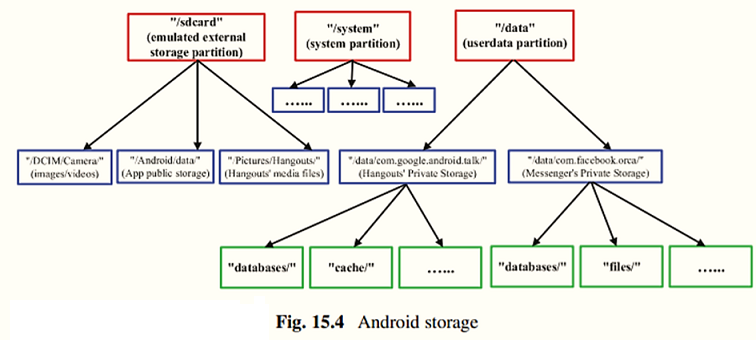
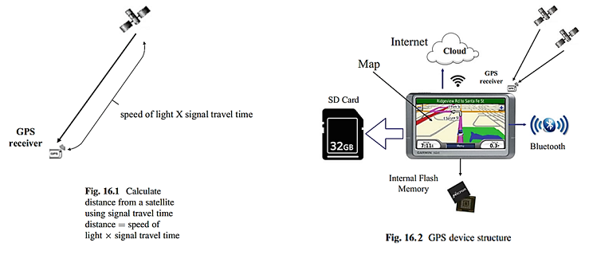
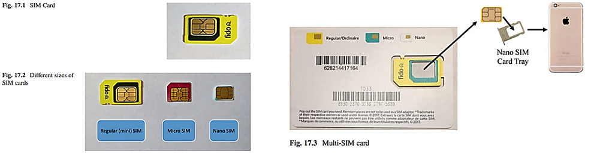

Forensik Digital
Ponsel merupakan salah satu teknologi yang sering digunakan oleh manusia dalam kegiatan sehari-hari. Tujuan utamanya adalah orang yang menggunakan ponsel untuk berkomunikasi dengan orang lain. Bentuk komunikasi melalui udara dapat tujuan bervariasi, dari yang hanya berbicara tentang hal-hal sederhana sampai hal-hal yang serius, misalnya tentang pekerjaan dan kegiatan positif dan negatif. Ini bisa menjadi bentuk negatif dari percakapan tentang rencana untuk kejahatan seperti pembunuhan, perampokan, pemerasan, korupsi dan narkoba. Analisis forensik digital dan peneliti harus dapat mengantisipasi hal-hal ini, sehingga ketika ada bukti ponsel yang disita dari para pelaku dapat diperiksa dengan baik sesuai dengan prinsip-prinsip dasar forensik digital.
Ponsel cerdas menjadi lebih bertenaga (misalnya meningkatkan daya pemrosesan CPU, berbagai macam sensor yang terpasang di dalamnya, dan antarmuka layar sentuh yang mudah digunakan); dan dengan demikian, jumlah aplikasi yang tersedia untuk perangkat semacam itu melonjak, merevolusi kehidupan kita. Seperti yang ditunjukkan pada Gambar. 15.2, smartphone khas saat ini memiliki struktur logis berikut dan terdiri dari:
Prosedur yang tepat harus diikuti untuk memastikan bahwa bukti yang diambil dari ponsel tersangka dapat diterima di pengadilan. Sedangkan untuk ponsel, lebih menantang karena ponsel saat ini sudah dilengkapi dengan banyak teknologi nirkabel, antara lain Wi-Fi (Wireless-Fidelity), Bluetooth, dan seluler. Jika ponsel masih hidup dan terhubung ke jaringan, sangat penting untuk mengisolasi ponsel dari jaringan dan perangkat nirkabel di sekitarnya untuk menjaga integritas data yang tersimpan di ponsel. Misalnya, letakkan ponsel di dalam “Tas Faraday”, yang mampu memblokir sinyal Frekuensi Radio (RF), termasuk sinyal seluler, satelit, Wifi, dan frekuensi Bluetooth (seperti pada gambar 15.3).
Ada tiga aspek kunci untuk penyelidikan forensik perangkat seluler yaitu Storage Location, Acquisition Methods, dan Data Analysis. Secara khusus, seseorang harus tahu di mana data disimpan, bagaimana data itu disimpan, dan semua izin file terkait sebelum jenis ekstraksi apa pun dapat dijalankan. Setelah informasi ini diketahui, data harus diekstraksi. Ini adalah aspek penting dari penyelidikan forensik yang jika sampai memilih metode yang tidak tepat dapat merusak penyelidikan.
Untuk mengekstrak dan menganalisis data yang tersimpan di ponsel cerdas, seseorang harus tahu di mana menemukan data yang diinginkan. Struktur sistem file tidak identik di semua perangkat Android. Namun, ada lokasi tertentu yang cukup standar (seperti data aplikasi yang disimpan di direktori "/data/data/"). Berikut penggambaran hierarki penyimpanan Android. 
Tingkat atas (merah) mewakili partisi (bagian dari semua partisi); tingkat kedua dan ketiga (masing-masing biru dan hijau) mewakili konten yang ditemukan di partisi ini. Partisi "userdata", dipasang di "/data", berisi semua penyimpanan aplikasi pribadi. Ini adalah konten yang dilindungi, hanya dapat diakses oleh setiap aplikasi. Ini adalah pengamatan penting ketika mempertimbangkan metode akuisisi data, karena pengguna harus memiliki hak akses root untuk mengakses konten ini secara langsung.
Kedua, partisi "sdcard" dapat berisi informasi yang berguna seperti gambar/video yang diambil oleh aplikasi kamera ponsel cerdas, file yang diunduh, dan penyimpanan aplikasi publik. Lokasi ini dapat diakses oleh siapa pun. Ini adalah lokasi lain untuk mencari konten yang relevan secara forensik. Terakhir, log sistem, kernel, dan aplikasi dapat menjadi sumber data yang berharga. Data ini “memberikan wawasan tentang aplikasi serta sistem yang menjalankannya”.
Penyimpanan ponsel cerdas berpotensi berisi sejumlah besar informasi yang mungkin relevan dalam penyelidikan forensik. Beberapa data ini disebabkan oleh aplikasi yang menyimpan informasi secara lokal di smartphone, sementara informasi lainnya disebabkan oleh sistem, kernel, dan log aplikasi. Sekarang kita harus menentukan cara mengambil data ini dari smartphone (metode akuisisi). Pertama, kita harus menentukan jenis gambar penyimpanan smartphone yang dapat diperoleh, karena gambar tersebut akan dirujuk dibeberapa bagian berikutnya.
Gambar Logis, sebagai salinan file dan folder dari penyimpanan perangkat. Ini berarti bahwa ketika data disalin, itu masuk akal; itu dalam bentuk yang dapat dikenali. File memiliki header yang tepat. Sistem filenya utuh. Namun, ini berarti bahwa semua file yang dihapus, atau "ruang yang tidak digunakan" tampaknya tidak akan disalin. Ini bukan salinan lengkap dari sebuah partisi, melainkan salinan dari konten logis saat ini dari partisi tersebut (atau kumpulan folder). Kelebihan: mudah untuk dikerjakan. Kelemahan: beberapa informasi tidak dapat diambil kembali, seperti file yang dihapus.
Gambar Fisik, adalah salinan bit-by-bit atau dump data dari perangkat penyimpanan atau partisi. Ini berarti bahwa semua data (baik bagian dari gambar logis saat ini, atau file yang dihapus, atau "empty space") akan disalin, dan tidak ada yang hilang. Kelebihan: konten yang telah diambil lebih besar daripada gambar logis sehingga data yang lebih berpotensi berguna dapat dipulihkan. Kelemahan: adalah potensi kesulitan dalam merekonstruksi data ini, misalnya menggunakan metode seperti file carving.
Sekarang kita bahas metode akuisisi data yang berbeda, menyoroti pro dan kontra, termasuk kombinasi metode perangkat keras dan perangkat lunak.
Metode ekstraksi data ini rumit dan membutuhkan banyak pengetahuan teknis, ketangkasan, dan kepercayaan diri untuk benar-benar membongkar perangkat seluler. Istilah "chip-off" adalah literal, yang berarti bahwa chip flash NAND sebenarnya dikeluarkan dari papan sirkuit, dan dihubungkan langsung dengan alat perangkat keras melalui pinnya. Chip ini disolder ke papan sirkuit, artinya alat seperti besi solder diperlukan untuk mengekstrak chip flash secara fisik.
Kelebihan metode ini adalah bahwa meskipun ponsel cerdas yang bersangkutan rusak, masih dimungkinkan untuk mengambil data darinya (selama chip flash tidak rusak).
Kelemahan metode ini adalah potensi merusak chip flash saat mengekstraknya dari PCB, membongkar smartphone dengan hati-hati bisa menjadi tugas yang memakan waktu dan jika ada batasan waktu yang ketat dalam investigasi maka metode ini mungkin tidak cocok.
JTAG adalah protokol komunikasi, sering kali didukung oleh prosesor “untuk menyediakan akses ke fungsi debug/emulasi mereka”. “Dengan JTAG, Anda terhubung langsung ke CPU perangkat dengan menyolder kabel ke bantalan JTAG tertentu pada papan sirkuit cetak”. Koneksi ini (Data IN, Data OUT, Control, Clock; secara kolektif disebut Test Access Port) memungkinkan perangkat lunak JTAG untuk berinteraksi langsung dengan CPU, dan memberikan perintah yang dapat memperoleh "dump memori biner lengkap dari NAND kilat”. Hasil dari ini adalah gambar fisik bit-by-bit lengkap dari memori flash.
Kelebihan JTAG daripada chip-off adalah modifikasi fisik perangkat yang lebih sedikit diperlukan berarti kemungkinan kerusakan chip flash lebih kecil. Namun, CPU tidak boleh rusak agar metode ini dapat dilakukan. JTAG mungkin masih berfungsi meskipun perangkat agak rusak, dan tidak dapat melakukan booting.
Kelemahan metode JTAG adalah tidak semua perangkat mendukung JTAG, sambungan Port Tindakan Uji mungkin sulit ditemukan, atau bahkan tidak disertakan pada PCB (sadapan TAP perlu ditambahkan secara manual sehingga membuat metode ini lebih invasif); ekstraksinya sendiri relatif lambat.
Ada banyak suite perangkat lunak forensik komersial yang tersedia yang dirancang untuk perangkat smartphone. Banyak dari mereka memanfaatkan penyedia konten yaitu sebuah fitur Android yang memungkinkan aplikasi untuk berbagi data satu sama lain seperti pesan SMS/MMS, kontak, log panggilan, dll. Fitur berbagi ini diperlukan, karena model keamanan Android di mana semua aplikasi memiliki data pribadinya sendiri dan tidak dimaksudkan untuk saling berinteraksi. Metode ini memungkinkan perangkat lunak forensik untuk mengambil beberapa data logis dari perangkat Android, namun hanya data yang dapat dibagikan oleh aplikasi tersebut.
Misalnya, perangkat lunak mungkin menunjukkan gambaran statistik tentang berapa banyak pesan yang Anda terima dari satu orang, dan kapan Anda menerimanya. Jenis tampilan data ini dapat digunakan untuk mengamati pola perilaku pengguna, yang akan menjadi informasi yang relevan dalam penyelidikan forensik.
Kelemahan metode ini yaitu perangkat lunak ini bisa sangat mahal, dukungan untuk perangkat baru mungkin agak lambat (relatif terhadap manual), karena kebutuhan untuk memperbarui perangkat lunak yang sesuai, serta tingkat modifikasi perangkat dapat menjadi masalah (misalnya melalui proses rooting).
ADB adalah alat baris perintah yang memungkinkan komunikasi antara komputer dan perangkat seluler Android (emulator). Program server klien mencakup tiga komponen berikut: Klien (berjalan pada mesin pengembang, dan mengirimkan perintah ke perangkat), Daemon (berjalan sebagai proses latar belakang pada perangkat Android, dan menjalankan perintah yang dikirim ke perangkat tersebut dari klien ) dan Server (berjalan sebagai proses latar belakang pada mesin pengembang, dan mengelola komunikasi antara klien dan daemon).
Perangkat lunak ini mencakup perintah seperti: Pull (menarik file dari perangkat Android ke mesin lokal), push (menyalin file dari mesin lokal ke perangkat Android), shell (mengeksekusi shell di perangkat Android untuk menavigasi file sistem, menjalankan program, dll.), utilitas untuk membuang file log, dll.
Jika perangkat Anda tidak di-root, aplikasi pencadangan dapat menggunakan penyedia konten untuk memperoleh jumlah data yang layak. “Penyedia konten mengelola akses ke kumpulan data terstruktur, merangkum data, dan menyediakan mekanisme untuk mendefinisikan keamanan data. Penyedia konten adalah antarmuka standar yang menghubungkan data dalam satu proses dengan kode yang berjalan di proses lain”. Mekanisme ini tidak akan menyalin semua data aplikasi, karena hanya memiliki akses ke aplikasi data yang diprogram untuk dibagikan. Beberapa informasi berguna yang dapat diakses melalui penyedia konten adalah SMS/MMS, log panggilan, kontak, kalender, informasi browser, dll. Sedangkan Jika Anda perangkat di-root, maka aplikasi ini mungkin dapat mengakses data yang diistimewakan secara langsung (misalnya: membuat salinan lengkap dari direktori "/data/data/").
Kelebihan metode ini adalah mudah karena hanya perlu menginstal aplikasi dan biarkan aplikasi melakukan tugasnya.
Kelemahan metode ini seperti terkait integritas perangkat (dengan menginstal aplikasi, Anda sebenarnya memodifikasi partisi "userdata" dan jenis modifikasi ini dapat dianggap tidak dapat diterima), jika rooting perangkat adalah bagian dari proses akuisisi, perangkat akan lebih dimodifikasi dan untuk menginstal aplikasi semacam itu, Anda harus memiliki akses ke perangkat (yaitu mengetahui kredensial kunci layar), dll.
Sebuah perangkat dapat di-boot ke firmware update atau download mode, dan ketika dalam mode ini proses update firmware dapat berjalan, yang digunakan untuk mem-flash firmware sistem baru. Catatan penting adalah bahwa “protokol pembaruan firmware adalah satu-satunya cara untuk mengakses memori flash secara langsung melalui S/W”. Oleh karena itu, mungkin ada perintah yang dapat digunakan untuk mengakses memori flash, dan mungkin memperoleh data yang tersimpan didalamnya. Program bootloader dan pembaruan firmware dapat dianalisis melalui rekayasa balik untuk menentukan proses dan perintah pembaruan firmware. Analisis ini menghasilkan penemuan perintah khusus yang dapat digunakan untuk mendapatkan citra fisik memori.
Kelebihan metode ini yaitu mampu memulihkan informasi dari banyak ponsel pintar tanpa memengaruhi integritas data perangkat, mampu memulihkan gambar fisik yang menyediakan lebih banyak data daripada gambar logis dan mampu memulihkan citra fisik tanpa harus membongkar smartphone sehingga tidak merusak sirkuit internal.
Metode ini mampu mendapatkan gambar logis dan fisik dari penyimpanan perangkat. Metode ini memerlukan modifikasi partisi pemulihan namun tidak akan memengaruhi data karena sebagian besar konten yang menarik terletak di partisi "userdata".
Kelebihan metode ini yaitu pelaksanaannya relatif mudah, Setelah gambar pemulihan khusus dibuat, langkah-langkah yang diperlukan untuk mengekstrak informasi menjadi sederhana, tingkat modifikasi perangkat lebih sedikit, Gambar fisik dan logis dapat diperoleh, Fleksibilitas ini sangat baik (Seorang penyelidik bisa mulai dengan menganalisis gambar logis, dan kemudian menganalisis gambar fisik jika diperlukan) dan tidak diperlukan pengetahuan tentang kredensial kunci layar.
Kelemahan metode ini yaitu gambar pemulihan khusus harus dibuat yang mendukung perangkat yang berbeda (bisa menjadi tugas yang memakan waktu, namun hanya perlu dilakukan sekali untuk setiap perangkat), penyimpanan perangkat agak dimodifikasi (namun modifikasi ini terbatas pada partisi pemulihan), terpisah dari informasi aplikasi yang tersimpan dan boot-loader perangkat dapat dikunci sehingga proses ekstraksi menjadi lebih sulit.
Setelah mengekstrak data dari telepon, sampai pada langkah analisis data untuk tujuan forensik. Pendekatan analisis data bervariasi dengan aplikasi Android seperti pesan instan, panggilan telepon, browser web, dan sebagainya. Dengan kata lain, setiap aplikasi memerlukan metode analisis forensik yang unik. Dalam sebagian besar karya ini, data dianalisis dan aktivitas atau kebiasaan pengguna diselidiki dari aspek-aspek berikut (namun tidak terbatas pada):
Banyak aplikasi jejaring sosial yang terintegrasi ke dalam smartphone baru, sehingga penyidik mungkin dapat menemukan bukti yang relevan pada smartphone tersangka dalam kasus yang melibatkan jejaring sosial.
Komunitas penegak hukum telah melihat peningkatan penggunaan perangkat Global Positioning System (GPS) sebagai instrumen kejahatan, atau sebagai "perangkat saksi", karena fitur yang secara otonom mengumpulkan dan mencatat data posisi selama kejahatan. Perangkat GPS menjadi bagian integral dari banyak penyelidikan. Perangkat GPS tidak hanya berguna untuk penyelidikan digital; namun juga dapat memberikan bukti bahwa perangkat berada di lokasi tertentu pada tanggal dan waktu tertentu.
GPS adalah sistem navigasi radio di seluruh dunia yang dibentuk dari konstelasi 27 satelit (24 beroperasi dan 3 tambahan jika salah satunya gagal) dan stasiun buminya yang mengelola satelit. Ada sejumlah aplikasi GPS; dua aplikasi yang paling populer adalah GPS Tracking dan GPS Navigation. Keduanya beroperasi berdasarkan prinsip trilaterasi menggunakan satelit. Perangkat GPS berkomunikasi dengan satelit menggunakan sinyal radio frekuensi tinggi berdaya rendah yang berjalan dari satelit ke perangkat. Dengan mengukur waktu tempuh sinyal secara tepat, perangkat dapat menghitung dengan tepat seberapa jauh jaraknya dari satelit; RADAR menggunakan prinsip yang sama untuk mendeteksi objek yang jauh.
Satelit secara terus-menerus menyiarkan sinyal ke perangkat GPS, dan informasi dalam sinyal berisi informasi yang dapat diidentifikasi dari satelit, lokasi saat ini, dan tanggal dan waktu saat ini (atau waktu sinyal dikirim). Setelah menerima sinyal, perangkat GPS menghitung perbedaan antara waktu sinyal dikirim dan waktu diterima. Kemudian ia tahu berapa lama sinyal yang dibutuhkan untuk mencapai penerima dari satelit. Karena kita mengetahui bahwa sinyal radio bergerak dengan kecepatan cahaya (186.000 mil/s), kita dapat memperoleh jarak antara satelit dan perangkat GPS dengan mengalikan waktu tempuh sinyal dengan kecepatan cahaya (Gambar 16.1).
Berikut struktur logis perangkat GPS (Gambar 16.2):
Perangkat GPS saat ini berisi banyak data yang menarik bagi penyelidik forensik. Ada banyak jenis data bukti berharga yang dapat dipulihkan dari perangkat GPS tergantung pada pabrikan dan modelnya seperti:
SIM merupakan kartu elektronik kecil yang menyimpan identitas pengguna telepon seluler resmi untuk jaringan seluler GSM, juga menyimpan kunci enkripsi yang digunakan dalam otentikasi pengguna dijaringan seluler. Penyedia layanan jaringan menggunakan kartu SIM untuk mengotentikasi pengguna ke jaringannya. Dengan demikian, peran utama kartu SIM adalah memberikan dan membuktikan identitas. Selain itu, kartu SIM juga berfungsi untuk menyediakan memori kecil bagi pengguna untuk menyimpan kontak dan menyimpan log panggilan dan SMS.
Kartu ini tersedia dalam berbagai ukuran seperti kartu SIM Mini, Mikro, dan Nano seperti yang ditunjukkan pada Gambar 17.2. saat ini ada juga istilah kartu multi-SIM yaitu kartu SIM dikirim dalam satu ukuran yang cocok untuk segala hal, sehingga kartu SIM Nano dapat diambil dari kartu SIM Mikro, yang juga dapat dikeluarkan dari kartu SIM Reguler, ditunjukkan pada gambar 17.3.
Semua kartu SIM terdiri dari dua bagian penyimpanan data yaitu sebagai berikut.
Kartu SIM sebagai sistem cerdas apa pun terdiri dari prosesor, memori, dan sistem operasi. Mikroprosesor dan OS dapat berupa kartu Java yang menggunakan platform bahasa pemrograman Java untuk perangkat yang disematkan atau eksklusif untuk penerbit. Chip SIM yang sebenarnya ditutupi oleh bingkai plastik. Namun, hanya permukaan koneksi (ditunjukkan pada Gambar 17.4) yang terpapar ke dunia luar yang menyimpan komunikasi antara perangkat dan kartu SIM melalui antarmuka serial.
Kartu SIM terdiri dari memori volatile dan non-volatile:
Sistem keamanan pada kartu SIM berupa PIN (Personal Identification Number) dan PUK (Personal Unlocking Key):
Untuk kartu SIM, kontak, log panggilan, dan pesan SMS disimpan dalam sistem file EF. Untuk menemukan bukti-bukti ini, data yang diekstraksi harus didekodekan untuk membantu penyidik membaca bukti yang diekstraksi. Mengapa penting untuk melihat bukti di dalam memori SIM sementara kontak, log panggilan, dan SMS dapat diambil dari perangkat itu sendiri? Karena kontak yang disimpan diperangkat mungkin berbeda dari kontak yang disimpan di SIM secara langsung. Selain itu, beberapa SMS yang dihapus dapat dipulihkan dari memori kartu SIM.
Lin X. (2018). Introductory Computer Forensics. Springer, Cham. https://link.springer.com/book/10.1007/978-3-030-00581-8